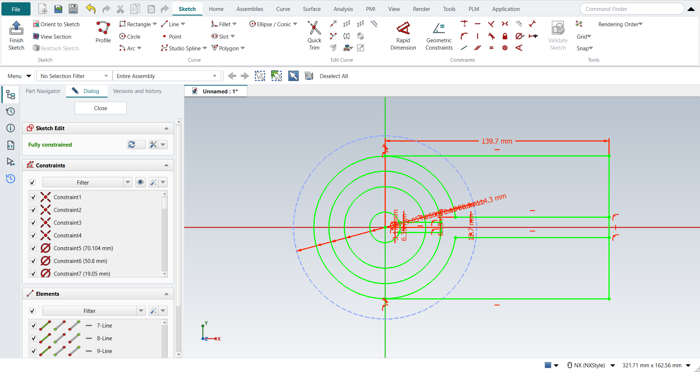
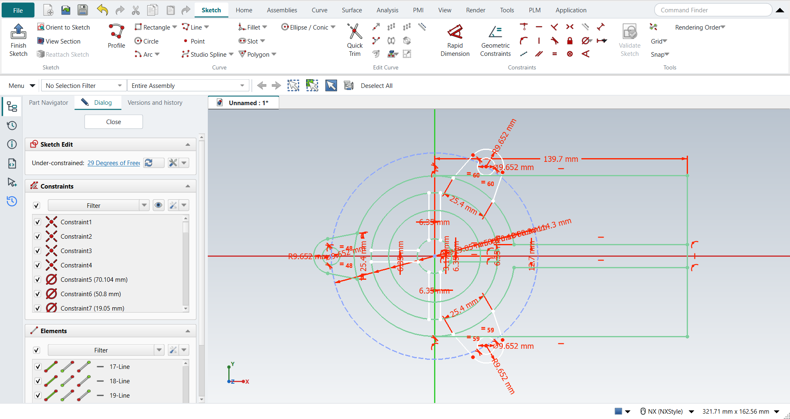

Tutorial AK: Holder
| Source |
Ming C. Leu, Wenjin Tao, Amir Ghazanfari and Krishna Kolan, NX 12 for Engineering Design (Missouri University of Science and Technology), exercise 3.6.2. The book gives only the dimensioned figure; the steps here are ours. Chapter 4 models the holder in 3D from this sketch: tutorial AW. |
| You learn |
circles and their diameters, a reference curve, Quick Trim, a cross and lugs drawn once and copied with Rotate Curve (NX: Pattern Curve, circular), tangent arcs in Profile |
| Sizes |
the book’s, in inches, typed in millimetres. Circles Ø0.75, Ø2.00 and Ø2.76 about the origin. The outline is a Ø3.50 circle and a 5.50 × 3.50 rectangle to its right, opened by a 0.50 slot along the X axis. A cross 0.25 wide runs from the Ø0.75 circle to the Ø2.76 circle. Three lugs sit on a Ø4.50 bolt circle, 120° apart. Each lug is a Ø0.38 hole in an R0.38 end, and its sides are tangent to the end and 1.00 apart where they meet the Ø3.50 circle. |
The figure does not say where the sides of the lugs at 60° and 300° end. Here they end on the Ø3.50 circle, as at 180°, so all three lugs are the same.
Step by step
2. The circles
Press O for Circle. Click the origin, then a point on the rim; do this four times, for Ø0.75, Ø2.00, Ø2.76 and Ø3.50, and press MB2. Give the diameters, biggest first: pick each circle and choose Radius / Diameter drop-down > Constrain diameter.
Draw the Ø4.50 bolt circle the same way. Select it and click Convert To/From Reference: it becomes a reference curve, drawn dashed.
3. The outline and the slot
Press Z for Profile. Click the top of the Ø3.50 circle, then go round the rectangle: right 5.50, down 3.50, back left to the bottom of the circle, and press MB2. The ends snap to the circle, tangent to it. Give the length: pick the top right corner and the Y axis, then Distance 5.50.
Press L for Line and draw the slot’s two sides, from the Ø3.50 circle to the right side. Dimension them: Distance 0.50 between them, and 0.25 from the X axis for the upper one.
Press T for Quick Trim, click the circle between the slot’s sides and press MB2. The sides stay tangent to what is left of the circle.
4. The cross
Draw one arm with Line: two lines from the Ø0.75 circle to the Ø2.76 circle, 0.25 apart, the upper one 0.125 above the X axis. Select the two lines and click Rotate Curve. In the Dialog panel set Copies to 3. Click the origin as the centre, then type 0° and 270° in the fields beside the pointer.

5. The lugs
Draw the lug at 180° with Profile:
-
start on the Ø3.50 circle, 0.5 below the X axis, and go out to the end;
-
press M three times for a tangent arc and go round the end;
-
go back to the circle, which FreeCAD draws as a tangent line.
Then fix it:
-
the arc’s centre on the bolt circle and on the X axis (Point on Curve);
-
the radius 0.38 (Radius / Diameter drop-down > Constrain radius);
-
Distance 1.00 between the two sides' ends on the circle, and the two sides Equal.
Draw the Ø0.38 hole: O, click the arc’s centre and the rim, then give its diameter. Select the lug’s three curves and the hole, click Rotate Curve, set Copies to 2, click the origin and type 0° and 240°.

Ctrl+Q, and save with Ctrl+S.
The replay
| # | In the book (NX) | In FreeCAD NX-Style | Result | Notes |
|---|---|---|---|---|
AK1 |
A new part in inches (Holder) |
Ctrl+N, Model template |
same |
new document ['Unnamed1'] |
AK2 |
Units in the New dialog (the book picks inches) |
metric part kept; book sizes typed in mm |
differs |
FreeCAD sets units in Preferences, not in the New dialog; NXStyle defaults to millimetres (document: Standard (mm, kg, s, °); 25.4 mm shows as 25.40 mm) |
AK3 |
Sketch on the XC-YC plane, OK |
ribbon 'Home › Direct Sketch > Sketch', plane row + MB2 |
same |
picked XY-plane (Base plane) |
AK4 |
Circles Ø0.75, Ø2.00, Ø2.76 and Ø3.50 about the origin |
O key, MB1 at the origin and on the rim, 4 times, MB2; each circle + 'Radius / Diameter' drop-down > 'Constrain diameter', biggest first |
same |
Ø3.50, Ø2.76, Ø2.00, Ø0.75; largest error 1.4e-14 mm (centres on the origin, diameters); DoF 0 |
AK5 |
The Ø4.50 bolt circle, a reference curve |
O key, MB1 at the origin and on the rim, MB2; circle + ribbon 'Sketch › Edit Curve > Convert To/From Reference'; Diameter 4.50 |
same |
reference True; diameter 4.5000 in; DoF 0 |
AK6 |
Profile: the rectangle’s three sides from the top of the Ø3.50 circle to its bottom, 5.50 long |
Z key, 4 MB1 clicks, MB2; the ends + circle or Y axis + 'Point on Curve'; corner + Y axis + 'Sketch › Constraints > Distance' 5.50 |
same |
Horizontal/Vertical/Horizontal [True, True, True]; 4 of 4 end holds made by the clicks (2 as Tangent to the circle), 0 added; DoF 0; the sides match |
AK7 |
Line: the 0.50 slot’s two sides, from the circle to the right side |
L key, 4 MB1 clicks, MB2; 'Sketch › Constraints > Distance' 0.50 between them and 0.25 from the X axis |
same |
Horizontal as drawn [True, True]; 4 of 4 ends snapped to the circle or the side, 0 added; DoF 0; the sides match |
AK8 |
Quick Trim: the Ø3.50 circle between the slot’s sides, MB2 |
T key, MB1 on the circle inside the slot, MB2 |
same |
1 arc R1.75, full circle left False; its ends held to the slot’s sides 2 of 2; DoF 0 ('Fully constrained'); geometry 10 → 10; 1 tangency FreeCAD’s trim dropped put back by NX-Style |
AK9 |
Line: one arm of the cross, 0.25 wide, from the Ø0.75 circle to the Ø2.76 circle |
L key, 4 MB1 clicks, MB2; 'Sketch › Constraints > Distance' 0.25 between the lines and 0.125 from the X axis |
same |
4 of 4 ends snapped to the circles, 0 added; DoF 0; the arm matches |
AK10 |
Rotate Curve: the arm, 3 copies 90° apart, about the origin (NX: Pattern Curve, circular) |
2 lines selected + ribbon 'Sketch › Edit Curve > Rotate Curve', Copies 3, MB1 at the origin, 0° and 270° typed in the on-view fields |
same |
6 copies made; largest error 4.5e-07 mm; DoF 21 |
AK11 |
Profile: the lug at 180°, a side, the tangent end arc, the other side |
Z key, 4 MB1 clicks (M 3x before the arc’s end), MB2 |
same |
curves ['line', 'arc', 'line']; tangent joints 2 |
AK12 |
The lug: centre on the bolt circle and the X axis, R0.38, the sides 1.00 apart and Equal |
centre + bolt circle / X axis + 'Point on Curve', arc + 'Radius / Diameter' R0.38, the ends + 'Sketch › Constraints > Distance' 1.00, the sides + 'Equal' |
same |
centre on the bolt circle; centre on the X axis; R0.38; 1.00 between the sides' ends; sides Equal; 1 of 2 side ends snapped to the circle, 1 added; DoF 21 ('Under-constrained: / 21 Degrees of Freedom'); the lug matches |
AK13 |
Circle: the Ø0.38 hole about the lug’s centre |
O key, MB1 on the arc’s centre and on the rim, MB2; Diameter 0.38 |
same |
centre snapped to the arc’s centre; error 0.0e+00 mm; DoF 21 |
AK14 |
Rotate Curve: the lug and its hole, 2 copies 120° apart, about the origin (NX: Pattern Curve) |
4 curves selected + ribbon 'Sketch › Edit Curve > Rotate Curve', Copies 2, MB1 at the origin, 0° and 240° typed in the on-view fields |
same |
8 copies made; largest error 3.6e-06 mm; DoF 29 |
AK15 |
The sketch: 29 curves and the bolt circle |
compared with the book’s figure |
same |
29 curves; all 29 match the book; DoF 29 ('Under-constrained: / 29 Degrees of Freedom') |
AK16 |
Finish Sketch |
Ctrl+Q |
same |
sketch edit ended True |
AK17 |
Save the file |
file name given once by script (the system file dialog is not driven); a change, then the Ctrl+S key |
same |
Holder.FCStd rewritten by Ctrl+S: the file holds the change and the part is unmodified afterwards (modified before the key: True); FreeCAD format, not .prt |
| Result | Means |
|---|---|
same |
The book’s NX steps work as written. |
differs |
It works, but the FreeCAD way is different; the notes say how. |
limit |
The book’s way fails in FreeCAD itself; a workaround follows in the next steps. |
missing |
FreeCAD has no such function; a stand-in follows. |
skipped |
Not replayed; the notes give the reason. |
FAILED |
Did not work. |
Each of the 29 curves is compared with the book’s figure, rebuilt from its dimensions.
What differs from NX
-
FreeCAD’s Rotate Curve takes the angle that the copies are spread over: 3 copies over 270° are 90° apart. NX’s Pattern Curve takes the count and the angle between the copies.
-
The copies keep their own dimensions (the R0.38 and Ø0.38, the 1.00), but they are not tied to the original, so the sketch keeps degrees of freedom. NX’s pattern stays associative.
-
FreeCAD’s Profile holds each end of the rectangle to the circle with two constraints: Point on Curve for the click, and Tangent because the side leaves the circle along its tangent. With the side horizontal, that pair is partly redundant: FreeCAD does not flag it, and its solver leaves the end up to 0.0001 mm from the point of contact. NX-Style leaves this pair as FreeCAD makes it: holding the end by one end-point Tangent instead would not keep the trim from dropping it (next point).
-
FreeCAD’s Quick Trim keeps a tangency on the trimmed circle only when OCC finds the line and the arc intersecting. A side that touches the circle at its very end, held as Profile holds it or by an end-point Tangent, is found or not by the sign of a rounding error, and FreeCAD dropped one side’s Tangent in 3 of 4 replays. NX-Style puts back each tangency the trim dropped where the line still touches the arc, as part of the same trim (one Undo takes it back); the replay reports how many it put back.